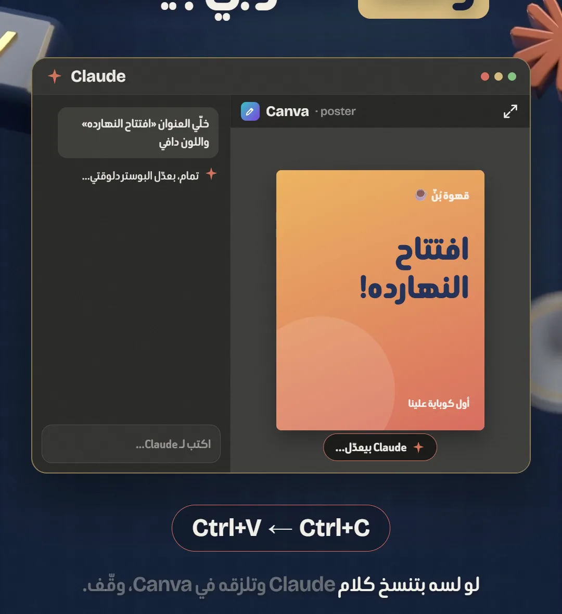
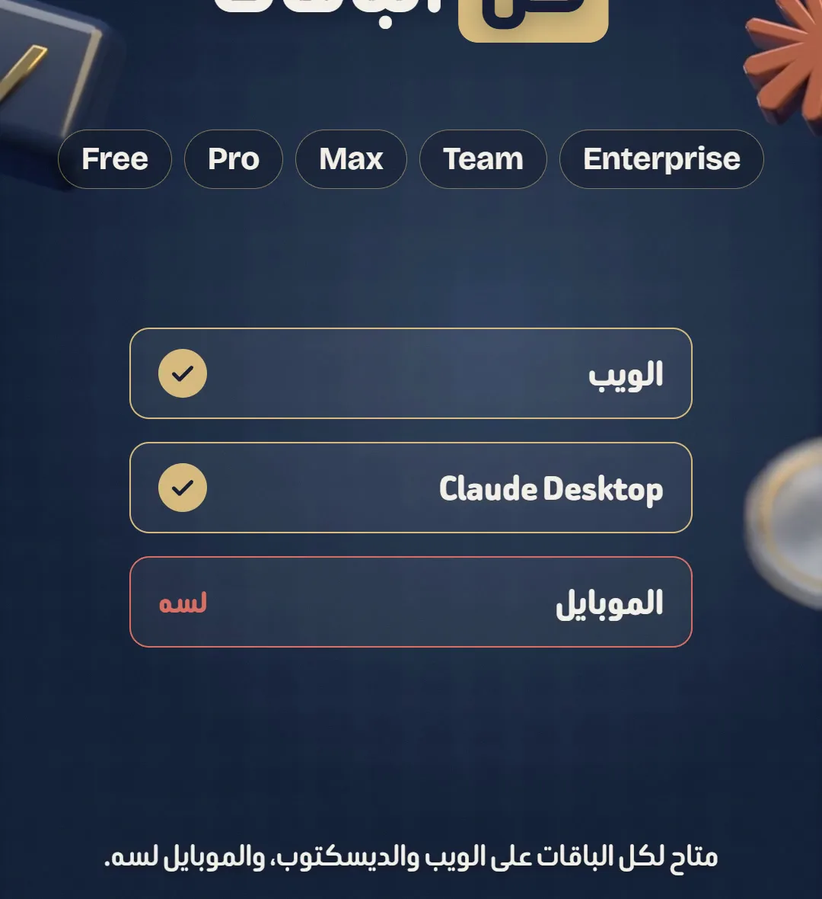
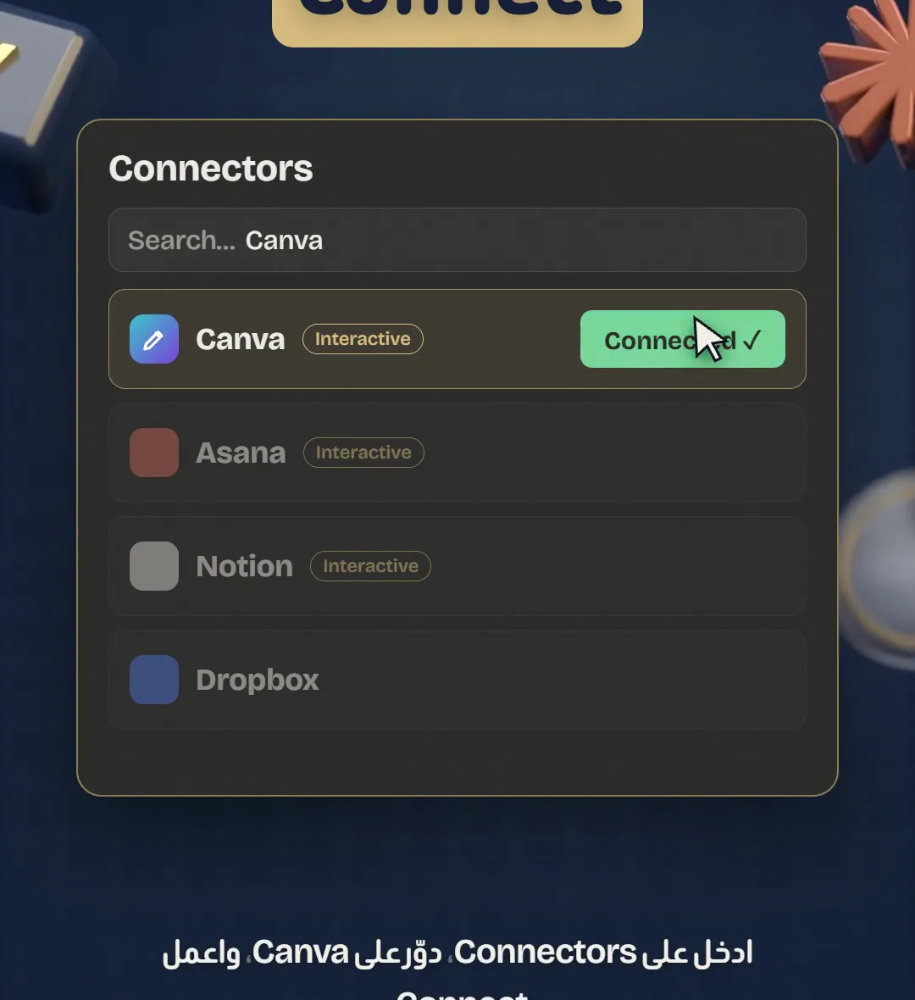
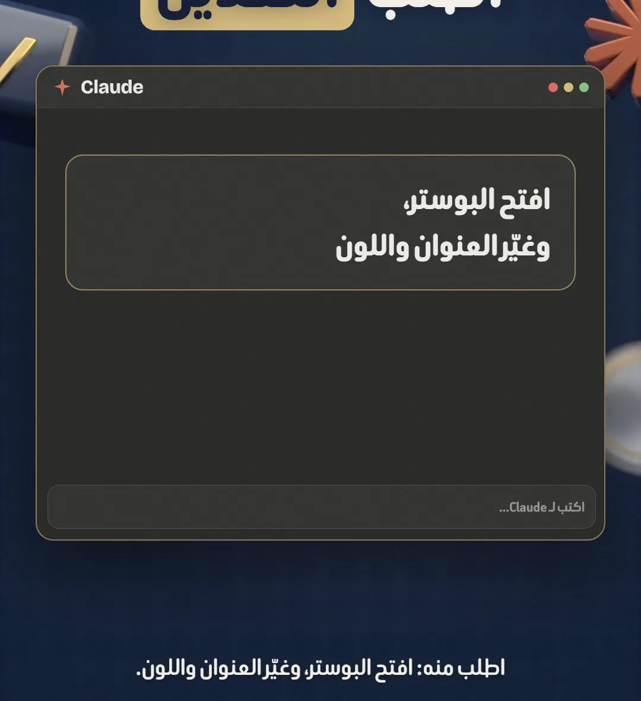
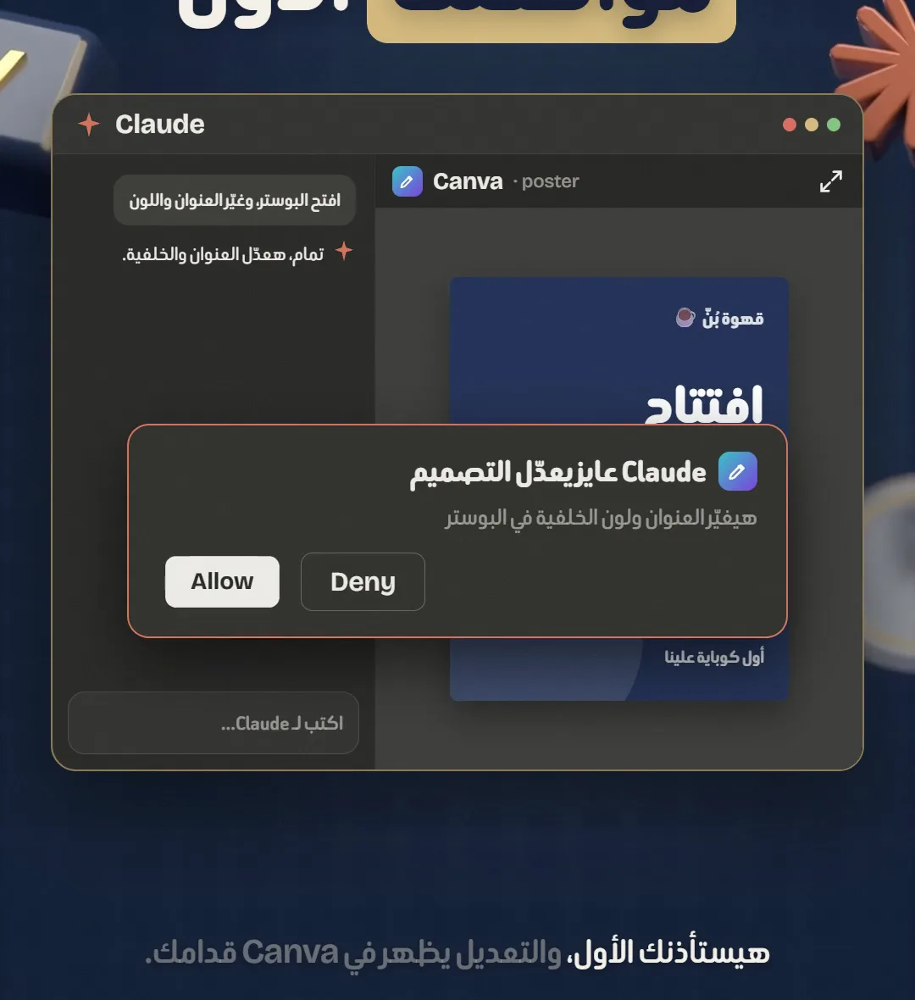
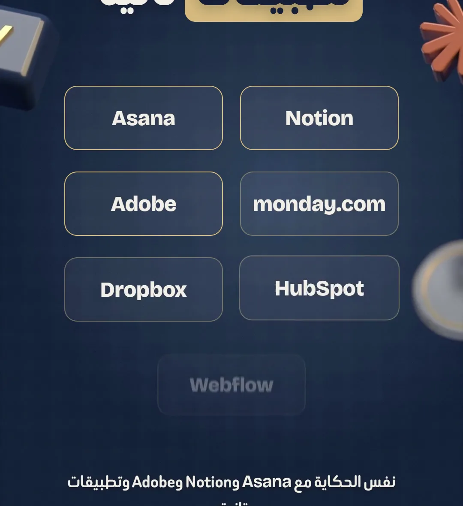

Canva بيفتــحجـــوه Claude
من 10 نوفمبر 2026: التطبيقات المتوصّلة (زي Canva وAsana وNotion) بتفتح جوه Claude نفسه، جنب الشات أو على الشاشة كلها، وClaude بيعدّل الملف المفتوح وانت شايف التعديل. بتنزل لكل الباقات على الويب وClaude Desktop، ولسه مش على الموبايل.


- 01
إيه الجديد بالظبط؟
قبل كده (من يناير 2026) لما توصّل تطبيق زي Canva كان بيطلعلك معاينة صغيرة جوه الشات بس. دلوقتي التطبيق نفسه بيفتح جنب الشات، وتقدر تكبّره على الشاشة كلها وتخفي الشات. Claude بيشتغل جوه الملف المفتوح، والتعديل بيظهر قدامك وهو بيحصل. وتقدر تعدّل بإيدك كمان في نفس المكان.
إعلان Anthropic الرسمي (10 نوفمبر) ↗
من الريل: البوستر بيتعدّل جوه Claude - 02
مين ياخدها؟
Anthropic بتقول إنها بتنزل على كل الباقات، على claude.ai في المتصفح وعلى برنامج Claude Desktop، للحسابات اللي عندها «Claude الجديد» (الشات وCowork مع بعض). لسه مش على الموبايل. لو مش لاقيها عندك، استنى شوية لأنها بتنزل على مراحل. في Team وEnterprise الأدمن يقدر يقفلها من Organization settings ← Connectors.

من الريل: كل الباقات، الويب والديسكتوب - 03
وصّل Canva
افتح Claude، وادخل على Connectors (من الإعدادات أو من زرار + جنب الشات). دوّر على Canva، ولازم يكون عليه علامة Interactive. دوس Connect وسجّل دخول بحساب Canva بتاعك. العرض التفاعلي شغّال لوحده من غير ما تفعّله.
شرح Claude الرسمي للـ interactive connectors ↗
من الريل: Connectors ← Canva ← Connect - 04
اطلب التعديل
اكتب طلبك عادي في الشات، مثلاً: «افتح البوستر بتاع الافتتاح، وغيّر العنوان لـ افتتاح النهارده، وخلّي اللون دافي». Canva هيفتح جنب الشات. لو عايز مساحة أكبر، دوس زرار التكبير في شريط التطبيق فوق.

من الريل: الطلب في الشات - 05
وافق وشوف التعديل
Claude بيستأذنك قبل أي تعديل في التطبيق، زي أي connector. دوس Allow، وهتشوف العنوان واللون بيتغيّروا في Canva قدامك. لو مش عاجبك، اطلب تعديل تاني أو عدّل بإيدك.

من الريل: Allow والتعديل بيظهر - 06
نفس الكلام مع تطبيقات تانية
التطبيقات اللي Anthropic ذكرتها: Asana وCanva وCarta وDropbox وmonday.com وSmartsheet وVercel وWebflow وAdobe وAtlassian وBox وHubSpot وNotion. وFigma لسه «بيشتغلوا عليها». ومعاها نزلت Claude Sheets وClaude Whiteboards (تجريبي) وClaude Data، للباقات المدفوعة.
Sheets وWhiteboards وData ↗
من الريل: تطبيقات تانية بتفتح جوه Claude
عايز حد يعملهولك؟
مش فاضي تتعلم وتعمل بنفسك؟ أنا بعمل ريلز لبراندك بنفس الطريقة اللي بشرحها هنا.